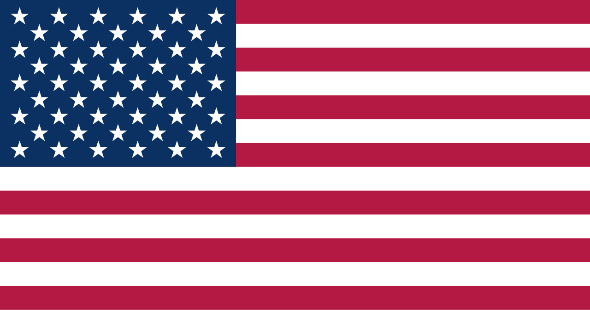

Estados Unidos da América
 Os Estados Unidos da América, comumente chamados de EUA, são uma república federal localizada na América do Norte, composta por 50 estados, o Distrito de Columbia e diversos territórios. Com uma área total de aproximadamente 9,83 milhões de km², é o terceiro maior país do mundo em extensão territorial e possui fronteiras com o Canadá ao norte e o México ao sul, além de litorais no Oceano Atlântico a leste e no Pacífico a oeste. A população ultrapassa 330 milhões de habitantes, tornando-se o terceiro país mais populoso do mundo, caracterizado por uma sociedade extremamente diversa e multicultural, resultado de ondas migratórias de todos os continentes ao longo dos séculos. Os EUA possuem uma economia altamente desenvolvida, considerada a maior do mundo em PIB nominal, baseada em tecnologia, indústria, serviços, agricultura e comércio internacional. O país é membro fundador da ONU, OTAN, G7, G20 e OMC, sendo referência global em inovação, cultura e poderio militar, com influência política, econômica e cultural em escala internacional.
História
A história dos Estados Unidos remonta à presença de povos indígenas, como os navajos, sioux, iroqueses e cherokees, que habitaram o continente por milhares de anos, desenvolvendo sociedades complexas, cultura e comércio regional. No século XVI, exploradores europeus, principalmente espanhóis, franceses e ingleses, chegaram às costas norte-americanas em busca de novas rotas comerciais e territórios. Durante os séculos XVII e XVIII, colônias britânicas se estabeleceram ao longo da costa atlântica, fundando cidades e desenvolvendo sistemas agrícolas e urbanos. O desejo de autonomia e questões econômicas levaram à Revolução Americana em 1775, culminando na Declaração de Independência em 1776 e na formação de uma república soberana em 1789, com a adoção da Constituição dos Estados Unidos.
O século XIX foi marcado por expansão territorial, conflitos com povos indígenas e guerras internacionais, incluindo a Guerra Civil Americana (1861–1865), que aboliu a escravidão e consolidou a União. A industrialização, o crescimento urbano e a imigração em massa transformaram a sociedade americana, tornando o país uma potência emergente. No século XX, os EUA participaram de duas guerras mundiais, desenvolveram tecnologia nuclear e espacial, e consolidaram sua posição como superpotência global, influenciando política, economia, cultura e tecnologia em todo o mundo. Até hoje, o país mantém forte tradição democrática, liberdade individual e direitos civis, ao mesmo tempo em que enfrenta desafios sociais, políticos e econômicos.
Cultura
A cultura americana é extremamente diversa e reflete a herança de múltiplas etnias e tradições, incluindo influências indígenas, africanas, europeias e asiáticas. A língua oficial de fato é o inglês, embora o país não possua uma língua oficial por lei federal; o espanhol também é amplamente falado em diversas regiões. A música, cinema, literatura e artes visuais americanas exercem grande influência global, com gêneros populares como jazz, blues, rock, hip-hop e cinema de Hollywood. Festividades como o Dia da Independência, Dia de Ação de Graças e Halloween representam tradições culturais que unem a população e reforçam a identidade nacional.
A gastronomia americana é diversa, variando por região e influências culturais, incluindo hambúrgueres, churrasco, frutos do mar, pratos tex-mex e culinária de imigrantes de todas as partes do mundo. A arquitetura combina edifícios históricos coloniais e vitorianos com arranha-céus modernos e projetos urbanísticos inovadores em cidades como Nova York, Chicago e Los Angeles. Instituições educacionais de renome internacional, museus, centros culturais e eventos esportivos contribuem para a formação de uma identidade cultural ampla e dinâmica, tornando os Estados Unidos uma referência global em inovação, diversidade e expressão artística.


Clima
Os Estados Unidos apresentam grande diversidade climática, devido à vasta extensão territorial que abrange diferentes regiões geográficas. O norte e o centro-norte têm clima continental, com invernos rigorosos e verões quentes. O sul possui clima subtropical, com verões longos e úmidos e invernos amenos, enquanto a costa oeste apresenta clima mediterrâneo em algumas regiões e clima oceânico na costa do Pacífico. Alasca possui clima subártico e polar, e o Havaí, clima tropical. Essa variedade climática influencia diretamente a flora, fauna, agricultura e modos de vida locais, tornando os EUA um país com extremos climáticos e ecossistemas muito diversificados.
Biodiversidade
A biodiversidade dos Estados Unidos é extensa, abrangendo florestas temperadas, desertos, pradarias, tundras, regiões costeiras e montanhas. O país é lar de espécies emblemáticas como ursos, bisões, águias, alces e crocodilos, além de aves migratórias e uma flora rica e variada. Parques nacionais como Yellowstone, Grand Canyon e Everglades protegem ecossistemas frágeis e promovem pesquisa científica e turismo sustentável. A conservação ambiental é prioridade, mas a biodiversidade enfrenta ameaças como urbanização, poluição, mudanças climáticas e perda de habitat natural.
Esforços de preservação incluem legislação ambiental rigorosa, áreas protegidas e programas de proteção de espécies ameaçadas, garantindo que os ecossistemas e recursos naturais permaneçam sustentáveis. O país é referência mundial em pesquisa ecológica e desenvolvimento de políticas ambientais, equilibrando crescimento econômico com conservação da natureza.

Cidades
As cidades americanas refletem a diversidade econômica, cultural e geográfica do país. Nova York é um centro financeiro e cultural global, Los Angeles destaca-se pelo entretenimento e indústria cinematográfica, Chicago é um polo industrial e de arquitetura, e Washington D.C. concentra o governo federal, museus e instituições históricas. Outras cidades importantes incluem Miami, San Francisco, Houston e Boston, cada uma com características econômicas, culturais e demográficas únicas.
As cidades nos EUA desempenham papel central na economia, tecnologia, cultura e educação, com infraestrutura avançada, centros universitários renomados, transporte eficiente e uma combinação de modernidade e patrimônio histórico. A urbanização e o planejamento sustentável buscam equilibrar qualidade de vida, desenvolvimento econômico e preservação ambiental, tornando as cidades americanas modelos de diversidade, inovação e multiculturalismo.